Examples#
This gallery walks through every public feature of
chemistrykit.solutions: pH/pOH and weak acid/base equilibria with
Henderson-Hasselbalch buffers, buffer capacity, and polyprotic
speciation; strong/weak acid-base titration curves and Gran plots; Ksp
solubility equilibria and the common-ion effect; and Debye-Huckel and
Davies activity-coefficient laws.
Each script in this gallery is self-contained and can be run directly with
python examples/solutions/<section>/<script>.py. Every script also
carries an RST module docstring as its title/description and uses # %%
markers to split narrative text from code, which is exactly what
Sphinx-Gallery renders into the pages below – the script is the source of
truth for what you see, not a copy of it.
Sections#
acid_base – mass action, Arrhenius dissociation, the Ostwald dilution law, the pH scale, conjugate pairs, Henderson-Hasselbalch buffers, buffer capacity, and polyprotic speciation.
titration – titration curves with numerically detected equivalence points, and Gran-plot extrapolation.
solubility – the solubility product and the common-ion effect.
activity – Debye-Huckel limiting, Guntelberg extended, and Davies activity-coefficient laws as a function of ionic strength.
Acid-base equilibria#
The law of mass action, Arrhenius dissociation and Ostwald’s dilution law, Sorensen’s pH scale, Bronsted-Lowry conjugate pairs, Henderson-Hasselbalch buffer design, Van Slyke buffer capacity, and Bjerrum speciation diagrams for polyprotic acids.
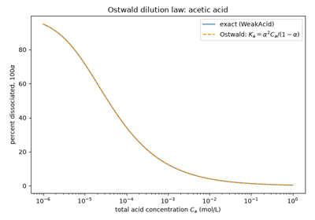
Ostwald’s dilution law: weak acids dissociate more when diluted
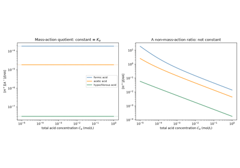
Guldberg and Waage’s law of mass action: a constant equilibrium quotient
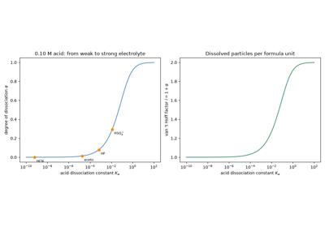
Arrhenius’s electrolytic dissociation: how much of an electrolyte is ions?
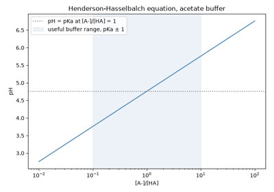
The Henderson-Hasselbalch equation and buffer design
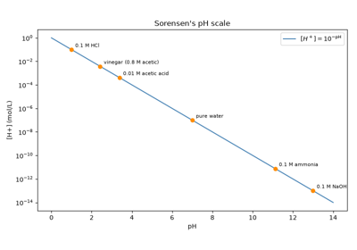
Sorensen’s pH scale: a logarithm for hydrogen-ion concentration
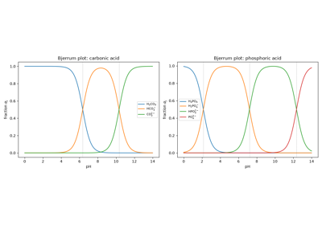
Bjerrum’s speciation diagrams for polyprotic acids
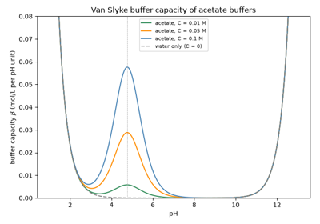
Van Slyke’s buffer capacity: how strongly a solution resists pH change
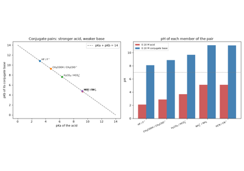
Bronsted-Lowry conjugate acid-base pairs: pKa + pKb = pKw
Activity coefficients#
The Debye-Huckel limiting law, Guntelberg’s extended law, and the Davies equation for activity coefficients as a function of ionic strength.
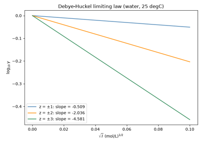
The Debye-Huckel limiting law: log gamma is linear in the square root of I
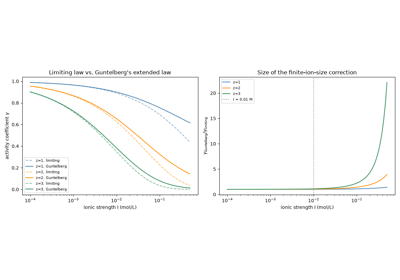
Guntelberg’s extended law: correcting Debye-Huckel for finite ion size
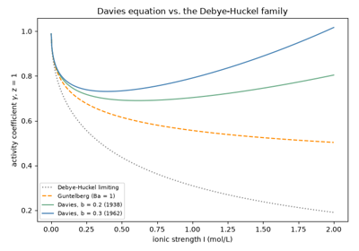
The Davies equation: activity coefficients that turn back up
Solubility equilibria#
Nernst’s solubility product for salts of any stoichiometry, and Le Chatelier’s common-ion effect.
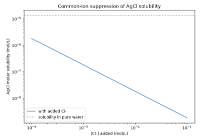
Le Chatelier’s principle: the common-ion effect on AgCl solubility
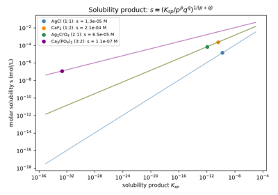
Nernst’s solubility product: Ksp for salts of any stoichiometry
Titration curves#
Strong/strong and weak-acid/strong-base titration curves with numerically detected equivalence points, and Gran-plot extrapolation of the equivalence volume.

Volumetric titration: locating the equivalence point
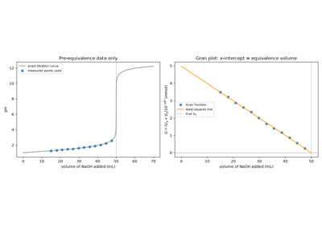
Gran’s plot: finding the equivalence point by linear extrapolation